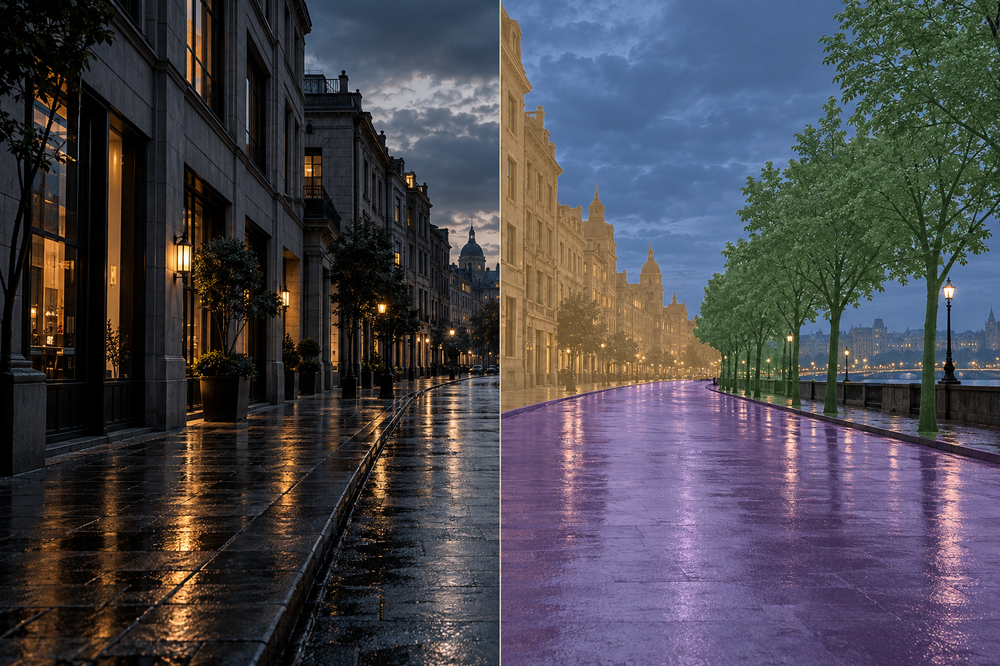

ALGORITHM EXPLORATION / 03CONCEPT STUDY · 概念展示
Semantic Segmentation
让每个像素，
有所归属。
01 / VISUAL EXPERIMENT
用颜色，读懂空间。

自然画面与分区效果并置，展示同一场景的不同观察方式。04 CLASSES / CONCEPT ONLY
02 / THE APPROACH
从画面，到语义。
语义分割的一般处理路径。
具体实现将随真实项目资料补充。
- 01
INPUT
准备画面
整理场景图像与类别体系，统一输入尺寸，并准备像素级标注。
类别定义 / 数据准备 - 02
SEGMENTATION
理解每个区域
提取局部细节与场景上下文，为像素预测类别，并恢复空间分辨率。
特征编码 / 像素分类 - 03
OUTPUT
呈现与评估
将类别映射为色彩，结合真实标注检查区域覆盖与边界，分析易混淆的场景。
分区可视化 / 误差分析
03 / BEYOND THE DEMO
让探索，
有据可循。
视觉先行，结果随后。
这里为真实项目的过程与成果留一个位置。
- 01 场景与数据
- 后续补充场景来源、类别定义与像素标注规范。
- 02 实验与评估
- 后续展示区域重叠指标、边界效果与类别混淆案例。
- 03 代码与复现
- 后续提供代码仓库、环境说明与运行方式。